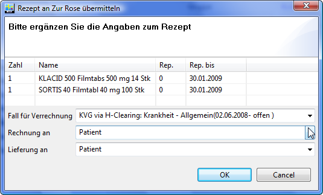

Ch.elexis.rezept.zurrose.feature.feature.group
| Version: | 3.0 |
| Kategorie: | Datenaustausch |
| Beschreibung: | |
| Author: | |
| Letzte Bearbeitung: | 21. Juni 2014 |
| Voraussetzungen: | Elexis 3.0 |
| Betriebssystem: | Windows, Mac, Linux |
| Lizenz: | Proprietär |
Einführung
Dieses Plugin dient dazu, Elexis-Rezepte an Zur Rose zu übermitteln und deren Antworten (z.B. Interaktionswarnungen) entgegenzunehmen. Es bindet sich ins Rezepte-Fenster als zusätzliches Ausgabeziel ein – man kann also ein und dasselbe Rezept auf den Drucker und/oder an Zur Rose schicken (und/oder an weitere Ziele wie MediDirect). Dieses Plugin benötigt Elexis 1.4.0 oder höher. Ausserdem benötigen Sie ein Konto bei Zur Rose und einen funktionierenden ASAS-Client. Der ASAS-Client muss gestartet sein, damit die Übermittlung gelingt.
Installation und Deinstallation
Wie gewohnt kann dieses Plugin durch einfaches Kopieren in den Elexis-Plugins-Ordner installiert und durch Löschen aus diesem Ordner wieder deinstalliert werden. Nach Installation und Deinstallation ist jeweils ein Elexis-Neustart notwendig, damit die Änderungen wirksam werden.
Konfiguration
[config] Um Rezepte übermitteln zu können, brauchen Sie das Recht Daten-Patient-Rezepte übermitteln (s. Abb. [fig:prefs1]). Geben Sie also allen Anwendern, die Rezepte übermitteln können sollen, dieses Recht.
[fig:prefs1]
Ausserdem müssen Sie die Zugangsdaten für ASAS und Zur Rose konfigurieren. Sie finden die entsprechende Einstellungsseite unter Datei-Einstellungen-Datenaustausch-Rezepte Zur Rose Link: http://xml.estudio.zur-rose.hin.ch/prescriptionXML/ (Vgl. Abb. [fig:prefs2]).
[fig:prefs2]
Die Serveradresse und Kundennummer sollten Sie von Ihrem Repräsentanten der Zur Rose erhalten haben. Die Angaben zum ASAS erhalten Sie z.B., wenn Sie unmittelbar nach dem ASAS-Start ‘Eigenschaften’ anklicken (s. Abb.[fig:prefs3]).
[fig:prefs3]
Anwendung

[fig:use1]
Nach Installation und Neustart sollten Sie im Rezepte-Fenster einen neuen Knopf vorfinden (Vgl. Abb. [fig:use1]). Klick auf diesen Knopf startet den Übermittlungsprozess (Aber nur sofern die aktuell in Elexis angemeldete Person das entsprechende Recht hat, Vgl. Abschnitt [config] und Abb. [fig:prefs1]). Markieren Sie also das gewünschte Rezept und klicken Sie auf den Button. Es erscheint dann ein Dialog wie in Abb. [fig:use2]

[fig:use2]
Ändern Sie falls gewünscht die Packungszahlen für jedes Medikament und geben Sie ggf. an, ob es wiederholt abgegeben werden darf (Rep.) resp. bis zu welchem Datum es wiederholt abgegeben werden darf (Rep. bis). Achten Sie auch darauf, dass der korrekte Fall angegeben ist (Vor allem wichtig, wenn die Rechnung an den Versicherer gehen soll), und dass die Angaben zu Rechnungsadressat und Lieferadressat korrekt sind. Wenn Sie auf ‘Abbrechen’ bzw. ‘Cancel’ klicken, wird der Transfervorgang nicht gestartet und es werden keinerlei Daten übermittelt. Wenn Sie OK klicken, wird die Verbindung aufgebaut und das Rezept wird an Zur Rose übermittelt.
Rückmeldungen
Der Ergebnis der Übermittlung wird Ihnen anschliessend mit einer Dialogbox angezeigt. Diese kann je nach Art der Rückmeldung unterschiedlich ausfallen. Hier einige Beispiele:
- Abb. [fig:err0]: Das Rezept wurde erfolgreich hochgeladen und vom Server als korrekt betrachtet. Es sollte ausgeführt werden.
- Abb. [fig:err2]: Interaktionswarnung. Der Zur Rose-Server hat festgestellt, dass es auf Ihrem Rezept Medikamente mit dokumentierter Interaktion gibt.
- Abb. [fig:err1]: Sonstiger Fehler. Hier können ganz unterschiedliche Fehlermeldungen auftauchen, die einen Fehler bei Elexis, beim Netzwerk, beim Internet oder beim Empfänger anzeigen können1. Wenn eine solche Fehlermeldung auftritt, wurde das Rezept nicht verarbeitet. Senden Sie es in diesem Fall ggf. erneut und wenn die Meldung persistiert, machen Sie am besten einen Screenshot des Meldungsfensters und senden diesen an Ihren Supporter.
[fig:err0]
[fig:err2]
[fig:err1]
1 In diesem Fall hier zeigt der Fehler an, dass ASAS nicht gestartet worden ist